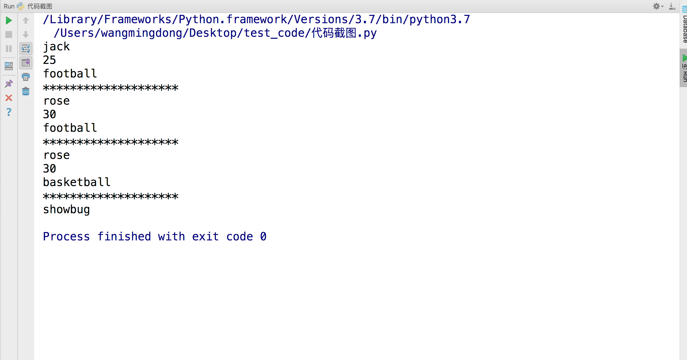

私有化
1. 目的
在开发中，有时需要某个名字充当变量名，但是不巧 已经被之前的代码开发者所使用，那此时该怎样实现呢？怎样才能实现私有的功能呢？
本节学习下各种下划线的命名作用
2. 规则
xx: 公有变量_x: 单前置下划线,私有化属性或方法，from somemodule import *禁止导入,类对象和子类可以访问__xx：双前置下划线,避免与子类中的属性命名冲突，无法在外部直接访问(名字重整所以访问不到)__xx__:双前后下划线,用户名字空间的魔法对象或属性。例如:__init__,__不要自己发明这样的名字xx_:单后置下划线, 用于避免与Python关键词的冲突
通过name mangling（名字重整(目的就是以防子类意外重写基类的方法或者属性)如：_Class__object）机制就可以访问”私有属性“了
# coding=utf-8
class Person(object):
def __init__(self, name, age, taste):
self.name = name
self._age = age
self.__taste = taste
def showperson(self):
print(self.name)
print(self._age)
print(self.__taste)
def dowork(self):
self._work()
self.__away()
def _work(self):
print('my _work')
def __away(self):
print('my __away')
class Student(Person):
def construction(self, name, age, taste):
self.name = name
self._age = age
self.__taste = taste
def showstudent(self):
print(self.name)
print(self._age)
print(self.__taste)
@staticmethod
def testbug():
_Bug.showbug()
# 模块内可以访问，当from cur_module import *时，不导入
class _Bug(object):
@staticmethod
def showbug():
print("showbug")
s1 = Student('jack', 25, 'football')
s1.showperson()
print('*'*20)
# 无法访问__taste,导致报错
# s1.showstudent()
s1.construction('rose', 30, 'basketball')
s1.showperson()
print('*'*20)
s1.showstudent()
print('*'*20)
Student.testbug()
运行效果：

3. 总结
- 父类中属性名为
__名字的，子类不继承，子类不能访问 - 如果在子类中向
__名字赋值，那么会在子类中定义的一个与父类相同名字的属性 _名的变量、函数、类在使用from xxx import *时都不会被导入